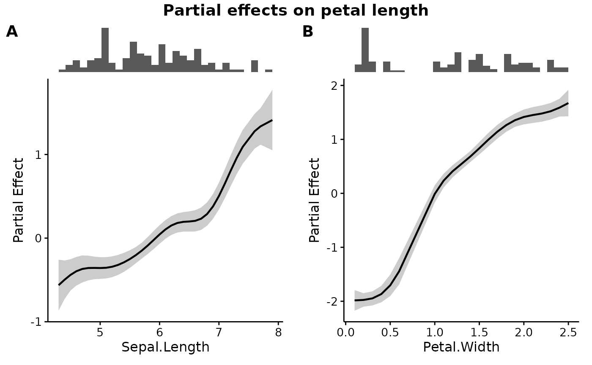
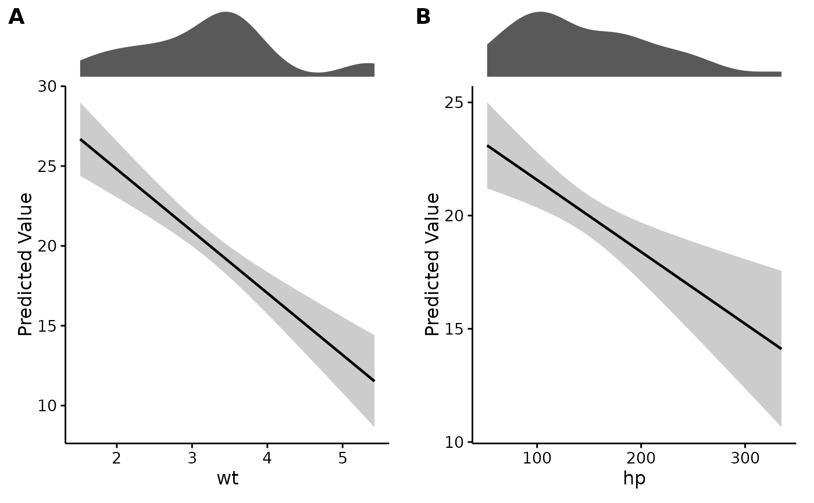

Runs plotEffects() over several predictors and arranges the results as a
labelled panel grid. Each panel keeps its own rug, so the panels stay
individually readable rather than becoming a wall of curves.
Usage
combinePlots(
model,
dat,
vars,
title = "",
var.transform = c("none", "log", "log10", "sqrt"),
scale = c("auto", "link", "response"),
interval = c("auto", "se", "ci", "cri"),
level = 0.95,
n = 100,
rug.type = c("histogram", "density"),
bins = 30,
labels = "A",
label.size = 14,
title.size = 14,
common.legend = TRUE,
...
)Arguments
- model
A fitted model. GAMs from mgcv are shown as partial effects; other model classes are shown as predictions. See
plotEffects().- dat
Raw data the model was fitted on.
- vars
Variables of interest, as a character vector.
- title
Plot title, optional.
- var.transform
How to transform the variables before plotting. One value used for every variable, or one per entry in
vars.- scale
"auto","link", or"response", passed toplotEffects().- interval
"se"or"ci", passed toplotEffects().- level
Confidence level used when
interval = "ci".- n
Number of points at which to evaluate each effect.
- rug.type
Type of rug plot to draw above each effect.
- bins
Number of bins for a histogram rug.
- labels
Panel labels:
"A"(the default) for upper-case letters,"a"for lower-case,"1"for numbers,"none"for none, or a character vector used verbatim, one per panel.- label.size
Font size of the panel labels. These are drawn by the arranging step rather than by the theme, so they do not follow
base_sizeand have to be set here.- title.size
Font size of the overall figure title, for the same reason.
- common.legend
Whether the panels share one legend.
- ...
Passed through to
plotEffects()and on to the backend.
See also
plotEffects() for a single predictor and for what the y axis
means under each model type.
Other effect plots:
comparePlots(),
plotEffects(),
plotRugs(),
plotSmooths()
Examples
gam.fit <- mgcv::gam(Petal.Length ~ s(Sepal.Length) + s(Petal.Width),
data = iris)
combinePlots(gam.fit, iris, vars = c("Sepal.Length", "Petal.Width"),
title = "Partial effects on petal length")

# Non-GAM models work the same way
lm.fit <- lm(mpg ~ wt + hp, data = mtcars)
combinePlots(lm.fit, mtcars, vars = c("wt", "hp"), rug.type = "density")
